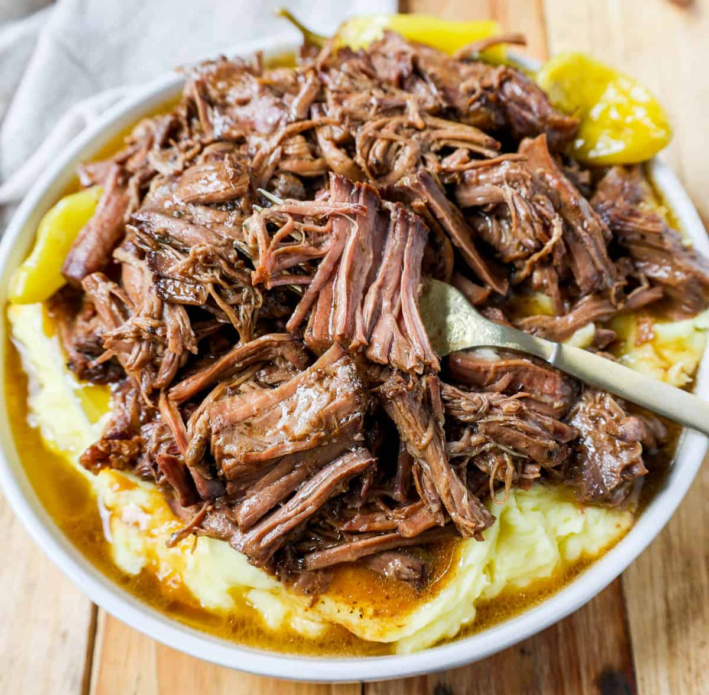

Mississippi Roast

Description:
This unique recipe for Mississippi Pot Roast is full of flavor and the most tender roast you will ever try. Filled with butter and tangy peppers for a surprisingly comforting meal. Great over mashed potatoes or steamed rice.
Indregients:
- 4lb. chuck roast
- 1 oz. ranch packet
- 1 oz. au jus gravy packet
- 1/2 cup unsalted butter
- 10 or more peperoncini peppers
- 1/4 cup peperoncini juice
Instructions:
- Add the roast to the slow cooker. You can brown the meat in a skillet on the stovetop if desired but I do not.
- Add the ranch packet and brown gravy packet on top of the roast.
- Add the stick of butter, peppers and pepper juice.
- Cover and cook on LOW for 8-10 hours or HIGH for 6-7 hours. Do not open the lid while the roast cooks.
- Shred with two forks right in the slow cooker. Remove any fatty pieces.